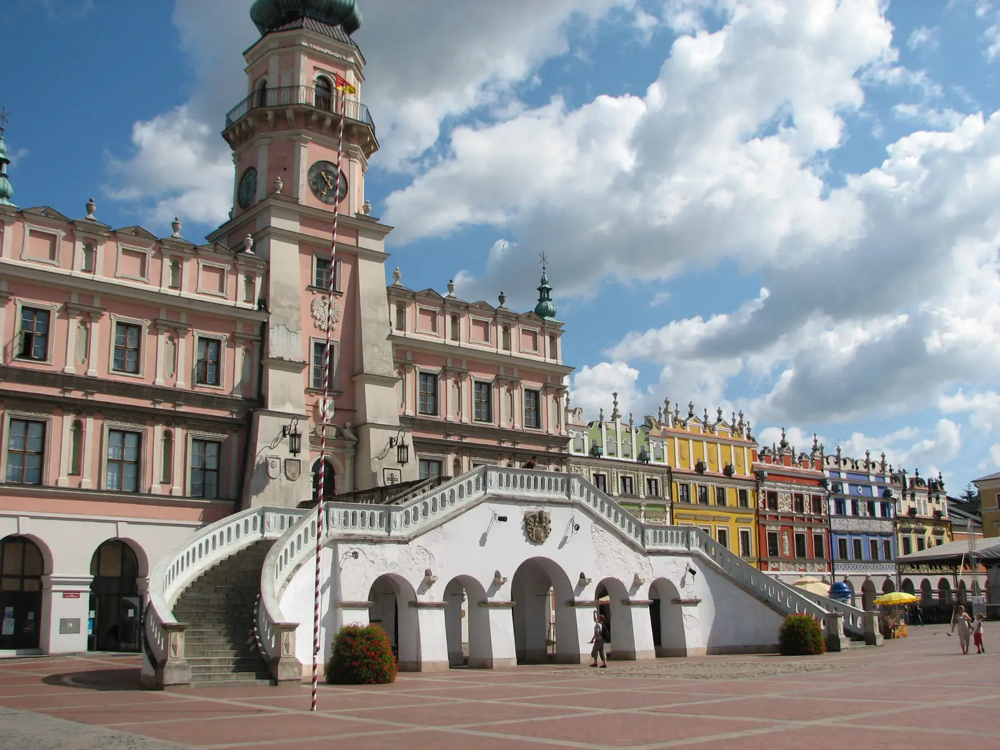

Warm rivers, historic wooden watermills and scenic trails through fragrant pine forests. Slow travel through Roztocze — a land of gentle hills and wooden villages.
Why Roztocze, differently
Roztocze is one of Poland's most underrated regions — a land of gentle hills, loess ravines, pine forests and wooden villages, stretching between Lublin and Zamość, near the Ukrainian border. There are no high mountains or great lakes here, but it has something that popular resorts lack — genuine peace.
Slow travel through Roztocze means giving up the chase in favour of contemplation. Instead of rushing from attraction to attraction, it is worth stopping at the Szumy cascades on the Tanew, sitting in the shade of an old mill, cycling through villages where time flows more slowly than anywhere else in Poland. This is a region that rewards those who slow down.
What to see
Roztocze splits into three parts: Western (around Kraśnik and Szczebrzeszyn), Central (Zwierzyniec, Szczebrzeszyn, Krasnobród) and Eastern (around Horyniec and Lubycza Królewska). The most interesting sights are in the Central part.
Szumy cascades and reserves
- Szumy on the Tanew — the most famous place in Roztocze. Picturesque rock steps on the Tanew river, where water falls with a roar, creating white cascades. Come in the morning or evening, when the light is soft.
- Nad Tanwią Reserve — covers the most beautiful stretch of the Tanew with numerous cascades and steps. A walking route along the river through pine forest — easy but requiring attention.
- Szumy at Susiec — lesser-known than the Szumy on the Tanew, but equally beautiful. Worth combining both in one cycling trip.
- Czartowe Pole Reserve — a gorge of the Sopot river with rock steps and wooden footbridges. A short but picturesque route.
Zwierzyniec and Roztocze National Park
- Zwierzyniec — a picturesque little town on the Wieprz, with a Baroque church on the water, a brewery and the Echo Ponds. Historically connected with the Zamoyski entail — it was the family's summer residence.
- Echo Ponds — a complex of ponds in Zwierzyniec, one of the most valuable natural areas in Poland. Cranes, herons and other water and marsh birds nest here.
- Roztocze National Park — covers the most beautiful fragments of the Solska Forest and the surroundings of Zwierzyniec. The park's symbol is the Polish Konik — a small horse descended from the tarpan, living here in the wild.
- Bukowa Góra — a hill in the park with a viewpoint over Zwierzyniec and the surrounding area. Worth climbing at sunset.
Krasnobród, Guciów and surroundings
- Krasnobród — a small town with a Marian sanctuary and a chapel on the water, one of the more important centres of worship in the region. Worth seeing the spa park and the rural museum.
- Guciów open-air museum — a Roztocze farmstead with thatched wooden cottages, with an exhibition of old rural crafts. One of the best places to understand what life was like in a Roztocze village.
- Susiec — a village in the middle of Roztocze, famous for its cascades and reserve. A good base for cycling trips.
- Zamość — the ideal Renaissance town with a UNESCO-listed market square. Worth combining a visit to Roztocze with a day trip to Zamość (~30 km).
When to go
- May and June — the best time for slow travel. Full bloom of greenery, fewer tourists, long days. Bring a jacket — the weather can be changeable.
- September — second best. Autumn colours, clear air, fewer crowds. Mushrooms in the forests — for foodies.
- July and August — peak season. Zwierzyniec and Zamość crowded, prices higher, but stable weather and all attractions open.
- October — end of the season, but beautiful Polish golden autumn. Shorter days, cool evenings, but spectacular views.
- Winter — Roztocze becomes wild and quiet. Trails harder, but for those seeking solitude — an extraordinary time.
Getting there
- By car: ~1 hour from Lublin (DK17 and DK74), ~30 min from Zamość, ~2 hours from Rzeszów, ~4 hours from Warsaw.
- By train: stations in Zamość and Zwierzyniec, with connections from Lublin and Warsaw. Then bus or minibus to smaller towns.
- By bus: PKS and private operators from Lublin to Zamość, Zwierzyniec, Krasnobród and Susiec.
Public transport in Roztocze is sparse — a car or bike is practically essential to see the most interesting places.
How much time you need
A weekend (2–3 days) is the minimum to see the Szumy on the Tanew, Zwierzyniec and Zamość. Enough for a first impression, but not for everything.
A week is realistic for a first visit. Three days cycling through the park and surroundings, two days for Zamość and the eastern part of Roztocze, two days for quiet villages and rest.
Two weeks lets you ride the entire Central Roztocze Trail, visit all the reserves and spend a few days in each of the more interesting towns.
What to eat and where to sleep
- Pierogi with bryndza — a speciality of the Polish-Ukrainian borderland. Served with cracklings or sour cream.
- Lublin cebularz — flat yeast dough with onion and poppy seeds, one of the region's most recognisable dishes.
- Roztocze trout — from local farms, grilled or from the grate, with horseradish and lemon.
- Krupnik — barley groat soup with vegetables and meat, in the Lublin version with dried mushrooms.
- Beer from the Zwierzyniec Brewery — a historic brewery in Zwierzyniec, brewing in regional styles.
- Korycin cheeses — from Korycin, near Roztocze. Smoked and aged, available in local shops.
Accommodation: Zwierzyniec (largest choice, close to the park), Zamość (town with full infrastructure), Krasnobród (spa, quiet), Susiec (village in the middle of Roztocze, quiet), Guciów (open-air museum and surroundings, very quiet). Guesthouses and agritourism farms dominate — book ahead in season.
Practical tips
- Bike — Roztocze is an ideal region for cycling. Routes are well-marked (Central Roztocze Trail), and distances between attractions are short. Rentals in Zwierzyniec, Zamość and Susiec.
- Roztocze NP ticket — required on some trails. Buy at entry kiosks or online.
- Nature reserves — leaving trails and swimming in the rivers is prohibited in reserves (Nad Tanwią, Czartowe Pole).
- Ticks — active in pine forests in summer. Repellent, long trousers and socks — essential.
- Weather — variable all year. Even in July, bring a rain jacket.
- Signal — good in Zwierzyniec and Zamość, weaker deep in the park and in small villages.
- Fuel and shopping — petrol stations in Zamość and Krasnystaw. Smaller villages have poorly stocked shops — do a bigger shop on the way.